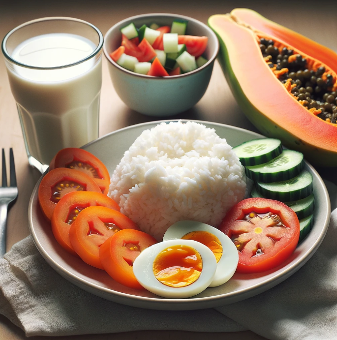

Healthy Meal Plans
Day 2
Home
Meal Plans
Learn More
Breakfast

Ripe papaya, Salted-egg, tomatoes & pipino with White Rice and Milk.
Ingredients
2 salted duck eggs
2 medium tomatoes, sliced
1 cup green beans, trimmed and cut into bite-sized pieces (pipino)
1/4 red onion, thinly sliced (optional)
1 tablespoon olive oil or vegetable oil
1-2 tablespoons vinegar (calamansi, white vinegar, or rice vinegar)
Salt and black pepper to taste
White Rice
Nutritional information for a typical serving of white rice (around 1 cup cooked, or 185 grams):
Nutrient
Amount
Calories
205 kcal
Protein
4.3 g
Fat
0.4 g
Carbohydrates
45 g
Ripe Papaya
Nutrient
Amount
Calories
62 kcal
Protein
0.7 g
Fat
0.4 g
Carbohydrates
16 g
Meal Procedure
You can either hard-boil them in water for 12-15 minutes or follow the instructions on the package if pre-cooked. Once cooked, peel off the shells.
Mash the yolks with a fork until they have a crumbly texture. Set aside.
Slice the tomatoes, trim and cut the green beans, and thinly slice the red onion (if using).
In a bowl, toss together the tomatoes, green beans, and red onion (if using).
Add the olive oil, vinegar, salt, and black pepper to the bowl. Toss gently to coat the ingredients evenly.
Sprinkle the mashed salted egg yolks over the salad.